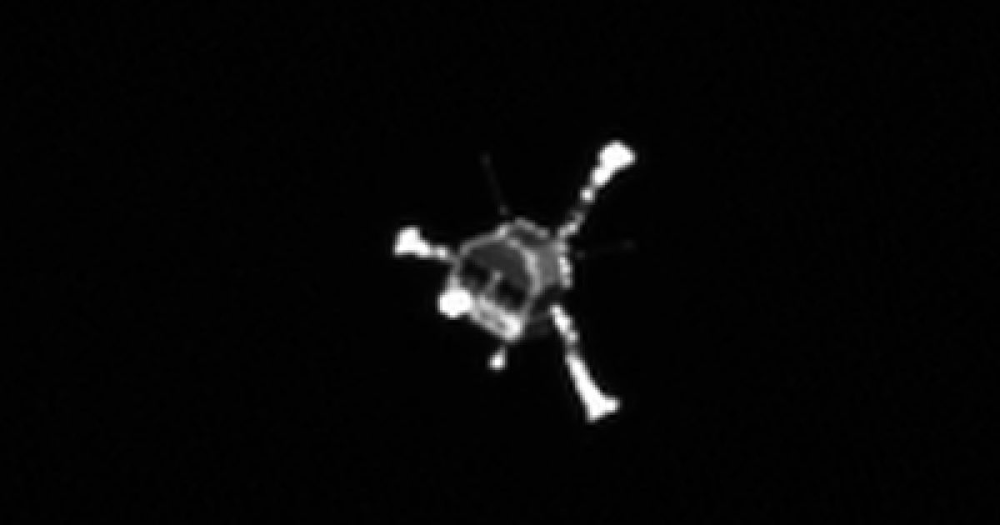

Посадка «Филы» на комету 67P: как прошло первое в истории приземление на ядро кометы
12 ноября 2014 года посадочный модуль «Фила» впервые в истории космонавтики совершил мягкую посадку на ядро кометы 67P/Чурюмова — Герасименко. Миссия «Розетта» Европейского космического агентства стала переломным моментом в изучении комет, дав уникальные данные о составе и свойствах этих небесных тел.
Путь к комете: десять лет в полёте
Миссия «Розетта» стартовала 2 марта 2004 года с космического центра Куру во Французской Гвиане. Аппарат должен был преодолеть 6,4 миллиарда километров, чтобы встретиться с кометой 67P/Ч-Г — этот путь занял более десяти лет и включал несколько гравитационных манёвров у Земли и Марса для набора необходимой скорости.
6 августа 2014 года «Розетта» вошла на орбиту вокруг кометы, став первым в истории аппаратом, ставшим спутником кометного ядра. Месяц позже, 12 ноября, началось разделение: посадочный модуль «Фила» отделился от орбитального блока и начал свободное снижение к поверхности, которое длилось около семи часов.

Посадка не по плану: отскоки и тень
Проект предполагал, что «Фила» зафиксируется на поверхности с помощью гарпунной системы и ледовых шурупов в ножках. Однако при касании гарпуны не сработали, а двигатель противодействия тоже не включился. Модуль отскочил от поверхности, совершил второй прыжок и остановился лишь через два часа в месте, получившем название Абидос.
Это оказалось участком в глубокой тени у склона или скалы. Солнечные батареи получали лишь около полтора часа света в сутки кометы (12,4 часа), что резко ограничивало энергопитание. Тем не менее, «Фила» смогла поработать от заряда основной батареи около 60 часов, выполнив основную научную программу.

Что узнала наука за три дня работы
Несмотря на сложные условия, инструменты «Филы» передали на Землю первые в истории панорамные снимки с поверхности кометного ядра и данные о его физических свойствах. Магнетометр ROMAP не обнаружил собственного магнитного поля у кометы — важный результат для понимания роли магнетизма в формировании планетесималей.
Анализ пыли и газов с помощью приборов COSAC и Ptolemy выявил органические соединения, включая некоторые, которые ранее не ассоциировались с кометами. Орбитальный аппарат «Розетта» параллельно изучал хвост и коме: данные о соотношении изотопов воды и обнаружении молекулярного кислорода заставили пересмотреть представления о происходе воды на Земле и химии протосолнечной туманности.
Наследие миссии и её значение
Розетта» продолжала наблюдения за кометой до сентября 2016 года, когда аппарат был намеренно посажен на поверхность. За два года орбитальной работы собран массив данных, обработка которого займёт десятилетия. Миссия доказала возможность сложных операций вблизи малотелочного объекта с микрогравитацией.
Опыт «Филы» учтён при разработке последующих миссий к астероидам и кометам, включая японскую Hayabusa2 и американскую OSIRIS-REx. Главный урок: посадка на малое тело требует избыточных систем фиксации и автономной навигации, так как связь с Землёй задерживается на десятки минут.
Инженерные уроки «Филы» для будущих посадок на кометы
При проектировании посадки на малые тела инженерам стоит обсудить с баллистами и специалистами по механизмам надежность анкерных систем: отказ гарпунов «Филы» привел к серии отскоков и посадке в тени. Необходимо заранее смоделировать поведение посадочного модуля в микрогравитации, предусмотреть запас дельта-величины для коррекции после первого касания и выбрать участок с гарантированной освещенностью для солнечных батарей. Критично также согласовать с командой орбитального аппарата протоколы ретрансляции данных на случай потери прямой видимости.
Посадка без избыточных систем питания и коммуникации не подходит для тел с непредсказуемым рельефом и длительным дневным циклом. Результат миссии зависит от устойчивости механизма фиксации к поверхности, точности навигации при спуске и способности аппарата работать автономно при неблагоприятном освещении. Опыт «Филы» показывает: даже при частичной неудаче грамотное резервирование позволяет вернуть уникальные научные данные о составе пыли, магнитном поле и газовом окружении кометы.
Коротко: Посадка «Филы» 12 ноября 2014 года стала первым в истории касанием кометного ядра. Несмотря на сбой систем фиксации, модуль передал уникальные данные о составе, магнетизме и структуре кометы 67P, изменив представления о ранней Солнечной системе.
Как вы считаете, стоит ли продолжать миссии посадки на кометы и астероиды, учитывая их высокую стоимость и риски?